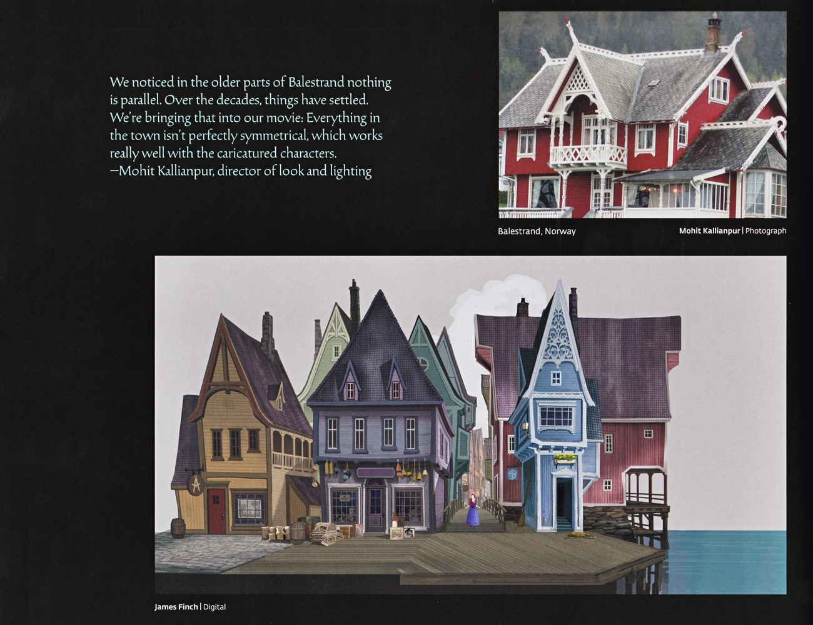

2024 年 6 月 6 日，东京迪士尼海洋第八个主题港湾“梦幻泉乡”（Fantasy Springs）开幕——其中“Frozen Kingdom”（Frozen 王国）是该园史上最大扩建工程的核心区域之一。
“梦幻泉乡”是东京迪士尼海洋史上最大的扩建区，包含三大区域：Frozen Kingdom（Frozen 王国）
、长发公主森林（Rapunzel's Forest）与小飞侠梦幻岛（Peter Pan's Never Land）。Frozen 王国以北境森林与阿伦黛尔为舞台，与香港园区的“城镇感”不同，更强调自然与灵性的沉浸氛围。Frozen Kingdom 的植被、光影与雾效以“进入北境森林”为设计母题——从暴风雪到极光，层层推进；与香港园区的白日峡湾风景形成互补的两种氛围。